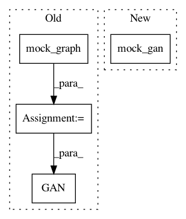

60b1f9eb915691fbac1e5d1edbcf295af628e131,tests/losses/softmax_loss_test.py,SoftmaxLossTest,test_create,#SoftmaxLossTest#,18
Before Change
def test_create(self):
with self.test_session():
graph = mock_graph()
gan = hg.GAN(graph=graph)
gan.create()
loss = SoftmaxLoss(gan, loss_config)
d_loss, g_loss = loss.create()
d_shape = loss.ops.shape(d_loss)
After Change
def test_create(self):
with self.test_session():
gan = mock_gan()
gan.create()
loss = SoftmaxLoss(gan, loss_config)
d_loss, g_loss = loss.create()
d_shape = loss.ops.shape(d_loss)
In pattern: SUPERPATTERN
Frequency: 4
Non-data size: 4
Instances
Project Name: HyperGAN/HyperGAN
Commit Name: 60b1f9eb915691fbac1e5d1edbcf295af628e131
Time: 2017-06-07
Author: martyn@255bits.com
File Name: tests/losses/softmax_loss_test.py
Class Name: SoftmaxLossTest
Method Name: test_create
Project Name: HyperGAN/HyperGAN
Commit Name: 60b1f9eb915691fbac1e5d1edbcf295af628e131
Time: 2017-06-07
Author: martyn@255bits.com
File Name: tests/losses/least_squares_loss_test.py
Class Name: LeastSquaresLossTest
Method Name: test_create
Project Name: HyperGAN/HyperGAN
Commit Name: 60b1f9eb915691fbac1e5d1edbcf295af628e131
Time: 2017-06-07
Author: martyn@255bits.com
File Name: tests/losses/category_loss_test.py
Class Name:
Method Name: build_gan
Project Name: HyperGAN/HyperGAN
Commit Name: 60b1f9eb915691fbac1e5d1edbcf295af628e131
Time: 2017-06-07
Author: martyn@255bits.com
File Name: tests/losses/boundary_equilibrium_loss_test.py
Class Name: BoundaryEquilibriumLossTest
Method Name: test_create